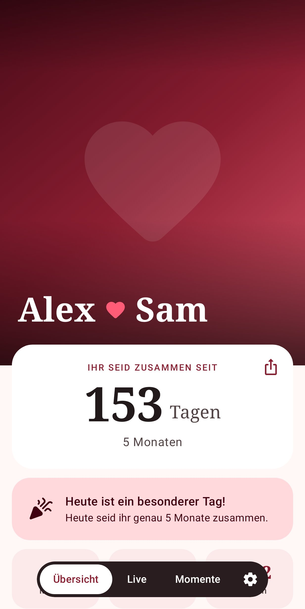
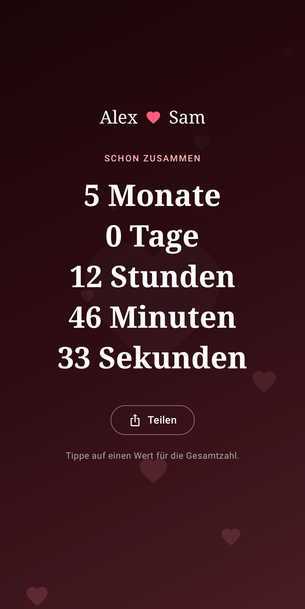
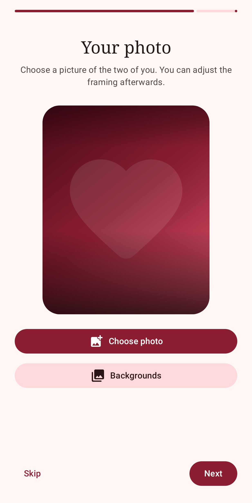

Since Us
EnglishEine datenschutzfreundliche Android-App für Paare: zählt, wie lange ihr zusammen seid, und erinnert euch an alle besonderen Tage.



Funktionen
- Tage, Wochen, Monate und Stunden zusammen, dazu ein sekundengenauer Live-Zähler
- Euer eigenes Foto mit anpassbarem Ausschnitt
- Mitteilungen an Jahrestagen, alle 100 Tage und bei Schnapszahlen wie 222
- Zwei Widgets für den Startbildschirm
- Deutsch und Englisch, hell und dunkel
- Keine Anmeldung, keine Werbung, kein Tracking: eure Daten bleiben auf dem Handy